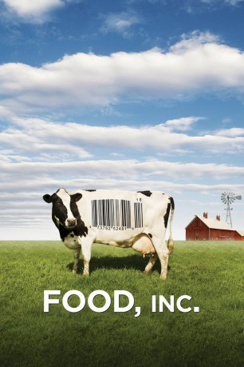

#4321 Food, Inc. - Was essen wir wirklich?
Alternativ: Food, Inc.
Auszeichnungen: für 1 Oscars nominiert
 
 IMDB-Wertung: 7.9 / 10
IMDB-Wertung: 7.9 / 10  Metascore: 0
Metascore: 0 
Diese Dokumentation behandelt die großen Nahrungsmittelhersteller, von denen es weltweit eine handvoll gibt. Sie beherrschen den Markt der Nahrungsmittelproduktion, profitieren von staatlichen Subventionen und generieren riesige Profite; die Gesundheit der Tiere und Menschen, die in diesen Prozess involviert sind, bleibt dabei allzuoft auf der Strecke.
Jahr: 2008
Dauer: 90 Minuten
FSK: 0
Land: USA Studio: Magnolia PicturesTonspuren: DTS - ,
Untertitel: Deutsch,
Auflösung: 1080p (1920x1080) Größe: 8693 MB
Genre: Dokumentation
Regisseur: Robert Kenner
Drehbuch: Richard Tuggle
Soundtrack:
Darsteller:
- Eric Schlosser als Himself - Author, 'Fast Food Nation'
- Michael Pollan als Himself - Author, 'The Omnivore's Dilemma'
- Tom Brokaw als Himself , archive footage
- Dan Rather als Himself , archive footage
- Theodore Roosevelt als Himself , archive footage
 Oprah Winfrey als Herself , archive footage
Oprah Winfrey als Herself , archive footage- Richard Lobb als Himself - National Chicken Council
- Vince Edwards als Himself - Tyson Grower
- Carole Morison als Herself - Perdue Grower
- Troy Roush als Himself - Vice President, American Corn Growers Association
- Larry Johnson als Himself - Center for Crops Utilization Research, Iowa State University
- Allen Trenkle als Himself - Ruminant Nutrition Expert, Iowa State University
- Barbara Kowalcyk als Herself - Food Safety Advocate
- Patricia Buck als Herself - Food Safety Advocate, Barbara's Mom
- Diana DeGette als Herself - Representative, Colorado
- Phil English als Himself - Representative - Pennsylvania, Co-Sponsor of Kevin's Law
- Eldon Roth als Himself - Founder of BPI
- Maria Andrea Gonzalez als Herself - Mother
- Rosa Soto als Herself - California Center for Public Health Advocacy
- Joel Salatin als Himself - Polyface Farms Owner
- Eduardo Peña als Himself - Union Organizer
- Gary Hirshberg als Himself - CEO, Stonyfield Farm
- Amanda Ellis-Thurber als Herself - Organic Farmer
- Tony Airoso als Himself - Wal-Mart's Chief Dairy Purchaser
- Moe Parr als Himself - Seed Cleaner
- David Runyon als Himself - Farmer
- Stephen R. Pennell als Himself - Moe's Lawyer
- William P. Kealey als Himself
- Maurice McDonald als Himself , archive footage
- Richard McDonald als Himself , archive footage
Datei: X:\Dokumentationen\Dokus(A-Z)\Food, Inc. - Was essen wir wirklich (2008, FSK0, 1920x1080).mkv seit 06.09.2016
Festplatte: HD Serien(SU-Z)+Dokus+Musik
 Es gibt insgesamt 34 Filme in der Gruppe 'Dokumentationen\Dokus(A-Z)'
Es gibt insgesamt 34 Filme in der Gruppe 'Dokumentationen\Dokus(A-Z)'